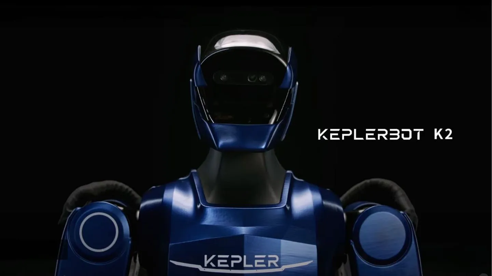

Unitree Robotics — Profile
Hangzhou's cost-engineering humanoid and quadruped maker.
Two Chinese humanoids, two completely different bets. Unitree's G1 wins on cost and volume; Kepler's K2 targets industrial work. Here is the honest comparison.

Searching for "Unitree G1 vs Kepler K2" means you are past the hype and actually comparing humanoids. Good. Here is the straight comparison of two very different Chinese machines — and which one fits which job.
The G1 and K2 are not really competitors in the same lane. Unitree's G1 is a cost-engineered, small, fast humanoid built for volume. Kepler's K2 is a full-size machine aimed at industrial and commercial deployment. One is trying to be the iPhone of humanoids; the other is trying to be the forklift.
| Company | Unitree (Hangzhou) | Kepler (Shanghai) |
|---|---|---|
| Robot | G1 | K2 |
| Size / weight | ~127 cm / ~35 kg | Full-size humanoid |
| Primary market | R&D, education, agile demos, volume sales | Industrial & commercial tasks |
| Strengths | Price, agility, best-selling volume, M107 joints | Full-size reach, industrial focus |
| Hands | Three-finger, 12 DOF | Full dexterous hands |
| Provenance | World's best-selling robot-dog maker | Newer, electronics-heritage founders |
| Strategy | Volume + cost | Industrial practicality |
The G1 is winning today on volume and price — it is the benchmark every Chinese rival measures against. The K2 represents a different bet: that industrial buyers will pay for a full-size, task-ready machine. Watch both: if the humanoid market splits into "cheap and everywhere" vs "big and industrially useful," these two are the leading representatives of each camp.
Hangzhou's cost-engineering humanoid and quadruped maker.
Shanghai's K2 full-size industrial humanoid.
Every G1 spec — height, weight, DOF, battery, price.
The G1 product profile in the database.
Unitree, Kepler and dozens more humanoid profiles in the database.